User manual
The tool surveys a network for IP cameras and recorders (NVRs and DVRs). For each one it finds, it records the make, model and firmware, finds its video streams, measures them (resolution, codec, bitrate, frame rate), and lists anything that needs attention, such as video that anyone on the network can watch without a password. Results can be saved as an Excel workbook, a CSV file or a JSON file.
Devices are found in two ways at once: cameras that announce themselves over ONVIF, and every address in the chosen range checked for the ports cameras use. Each device is then identified over ONVIF, or by trying the stream addresses its maker uses.
Run CctvDiscovery-<version>-sfx.exe. It unpacks itself to
%LOCALAPPDATA%\Programs\CctvDiscovery\<version> and starts the tool. Nothing else
needs installing: it carries its own Java runtime. Run it again whenever you want to start the tool,
or start CctvDiscovery.exe from that folder.
Unzip CctvDiscovery-<version>.zip anywhere and run CctvDiscovery.exe.
Settings, remembered stream paths and logs are kept in %LOCALAPPDATA%\CctvDiscovery,
whichever copy of the program is running. Usernames and passwords are never saved; they last for the
session.
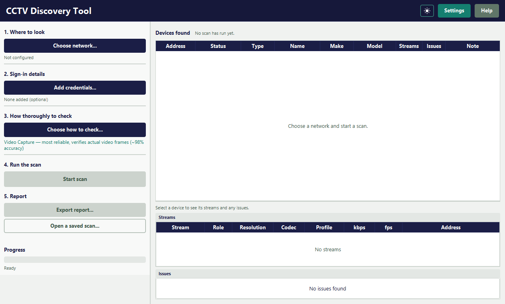
The main window before a scan
Left: the five steps of a survey, then the progress of the current scan.
Right: the devices found. Select one to see its streams and issues below the table.
Top right: the light and dark switch, Settings, and Help, which opens a short guide and this manual.
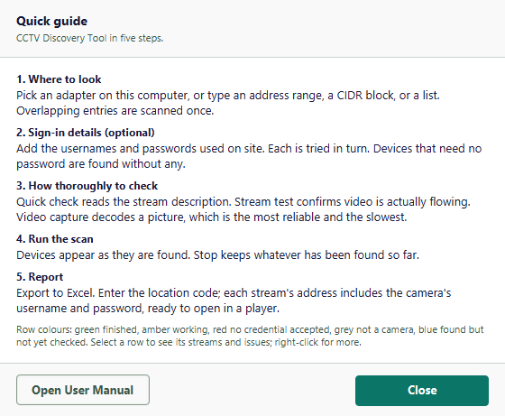
Help: the five steps at a glance, and a button that opens this manual
Choose Choose network.... The Simple tab takes one of:
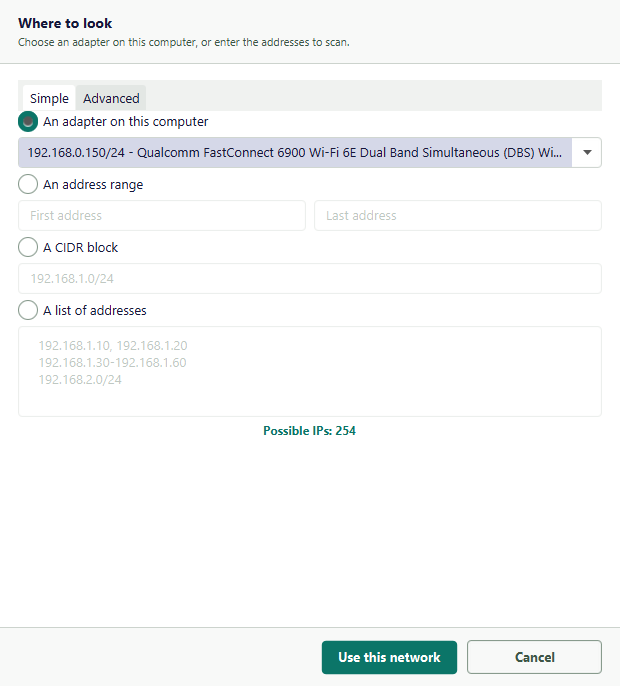
Choosing an adapter
The Advanced tab combines several adapters, ranges and blocks in one scan. Overlapping entries are scanned once.
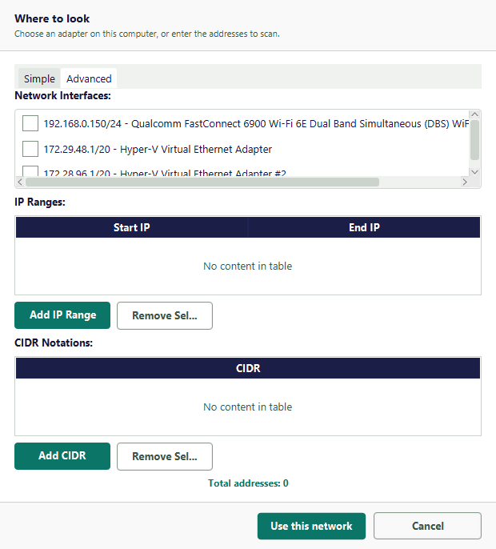
Several networks in one scan
Add the usernames and passwords used on site, up to 8. Each is tried in turn on every device until one works. Devices that need no password are found and measured without any; that is also how a camera open to anyone is detected.
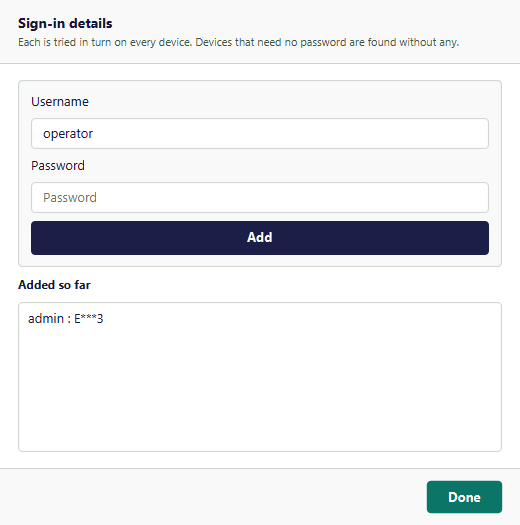
Passwords are masked in the list; right-click an entry to edit or delete it
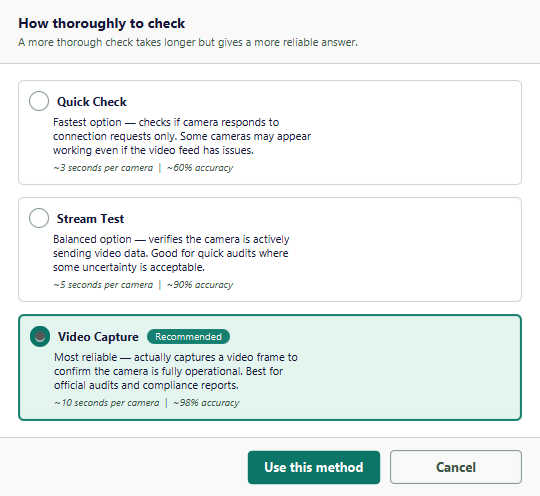
The three levels of checking
Choose Start scan. Devices appear as they are found, and each row's status changes as it is identified and measured. Stop keeps everything found so far.
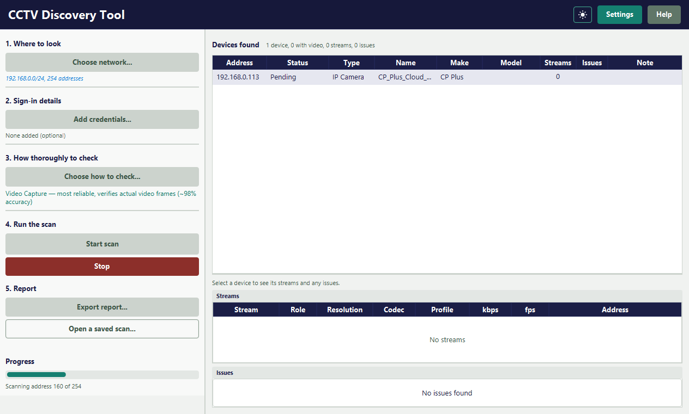
A scan in progress
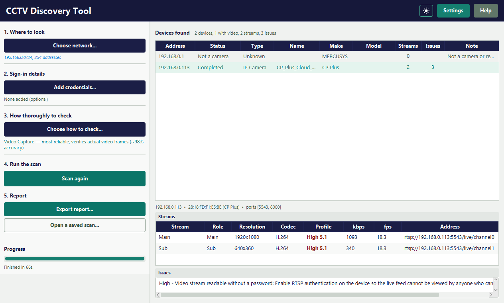
A finished scan with a camera selected: its streams, then its issues
Right-click a device for:
Choose Export report... and enter the location code: the code of the test centre, premises, site or LAN you surveyed. It goes into the report and the file name.
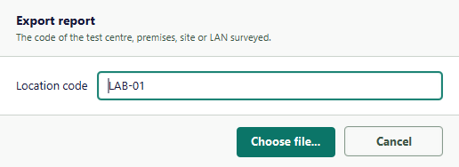
The only question before saving
Then pick where to save it and the file type: Excel workbook (the default), CSV, or JSON. Open a saved scan... reads a JSON file back into the window.
Green: finished, with video.
Amber: being identified or measured.
Red: needs a password, or none of those entered was accepted.
Grey: not a camera or recorder, such as a router.
Blue: found, not yet checked.
| Status | Meaning |
|---|---|
| Completed | Identified, with at least one stream measured. |
| Sign-in needed | The device asks for a password and none of those entered worked, or none was entered. Add the right one and use Try other credentials... |
| No video | A camera or recorder, but no stream address it serves was found. If its stream path is unusual, add it under Settings, Stream Paths. |
| Not a camera | Something on the network that is not a camera or recorder. |
| Error | Something went wrong while checking it; the note says what. |
Each device lists what needs attention, from High to Info. For example:
Saved for this Windows user, in the folder shown at the bottom of the dialog. Reset to Defaults asks before it changes anything.
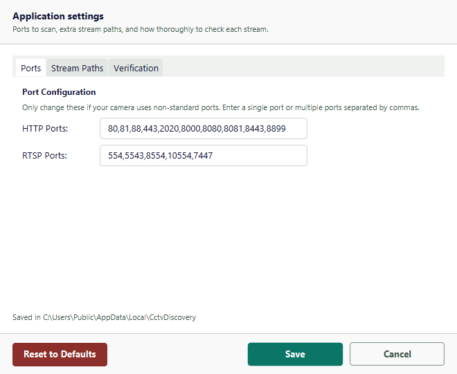
The ports checked on every address
Only change these for cameras on non-standard ports. A port is recognised by what answers on it, not by its number, so adding it here is enough.
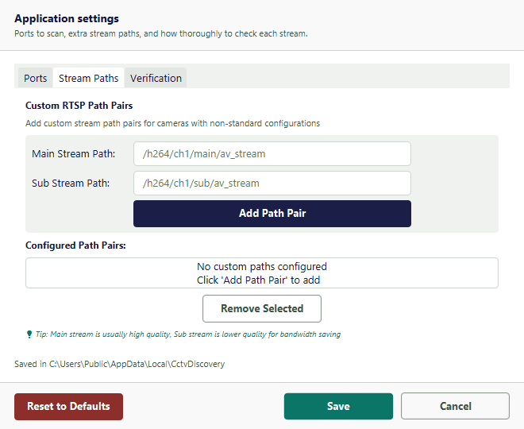
Extra main and sub stream paths
The tool knows the stream paths of the common makes. Add a main and sub path pair here for a model it does not know. Paths that work are remembered per make for later scans.
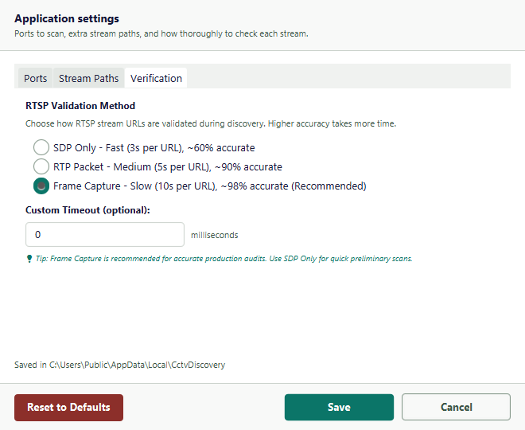
The default level of checking, and an optional timeout
The Excel workbook has five sheets:
%LOCALAPPDATA%\CctvDiscovery\logs.No. It reads device information and video, and changes no settings.
Any camera or recorder that speaks ONVIF or RTSP. Stream paths are built in for Hikvision (with Prama, HiLook, HiWatch and EZVIZ), Dahua (with Imou), CP Plus, Uniview, Axis, Bosch, Hanwha, Panasonic, Sony, Vivotek, Amcrest and Foscam.
Yes. Paste a stream address into a player such as VLC.
How far the device's clock is from this computer's. A large difference makes recordings hard to match to real events; point the device at a time server.